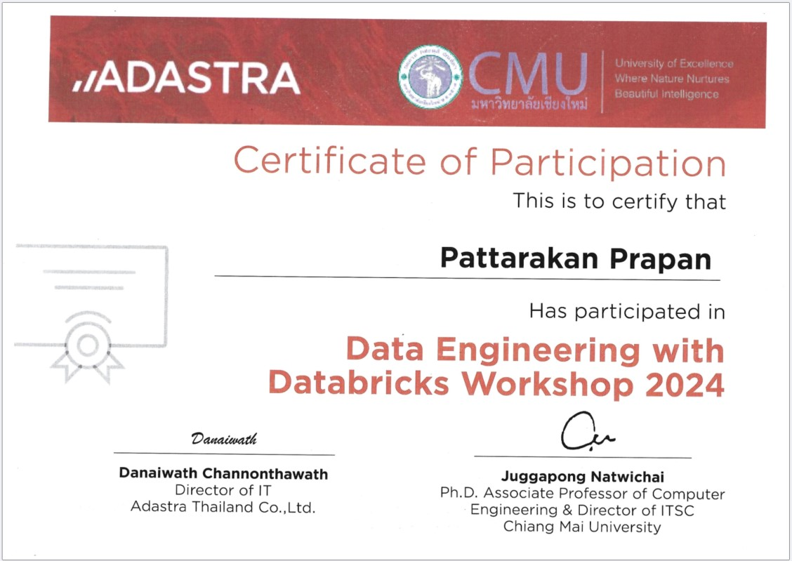
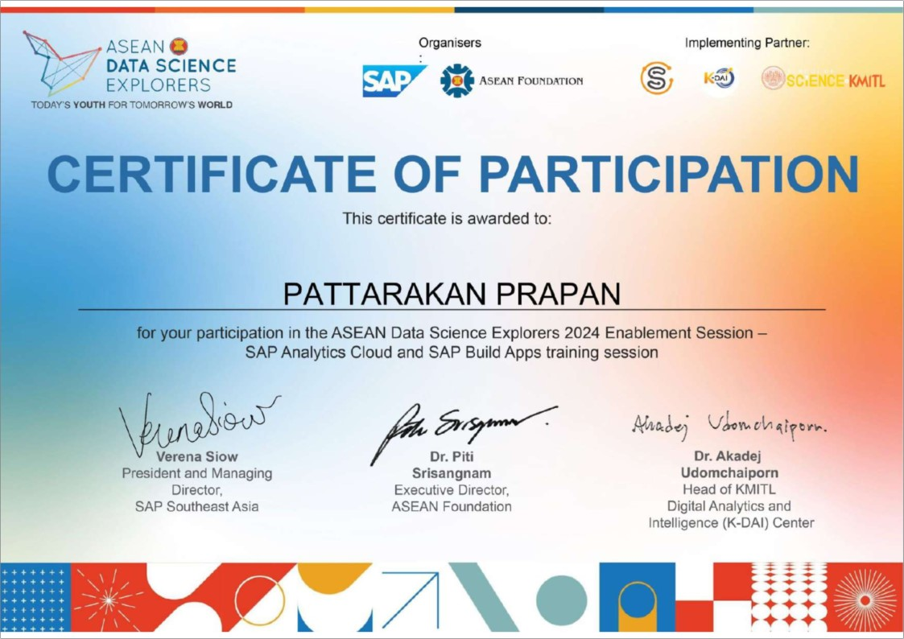
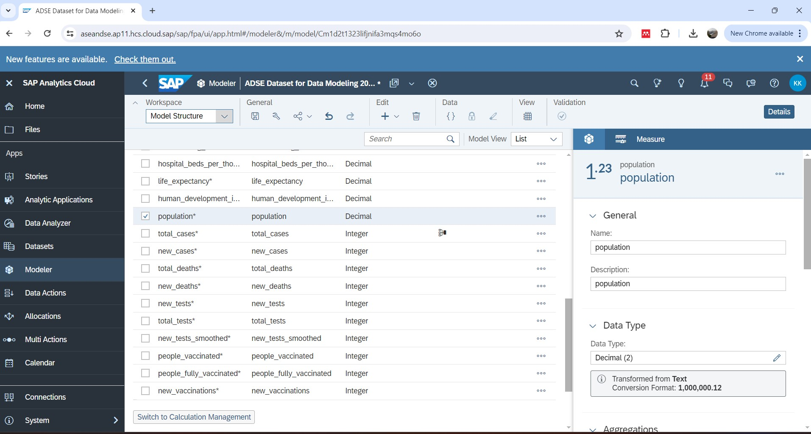
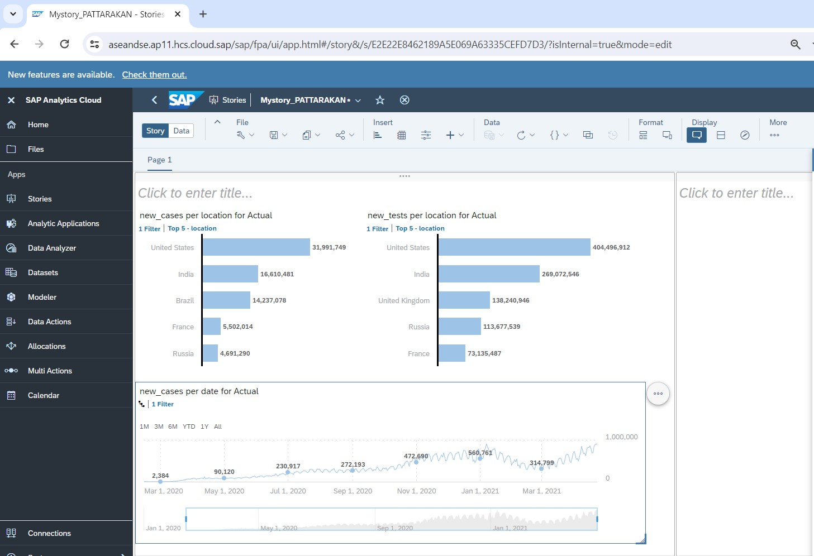
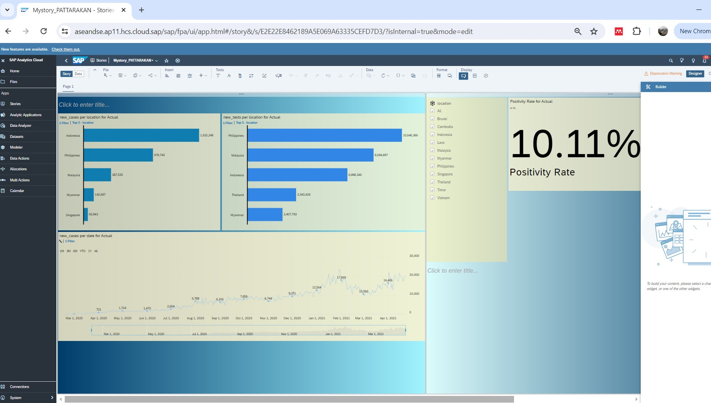
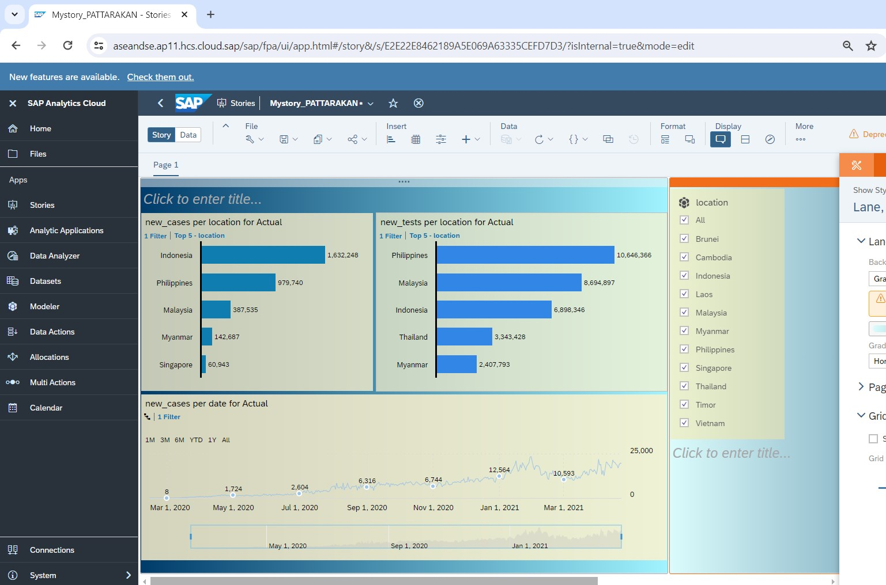
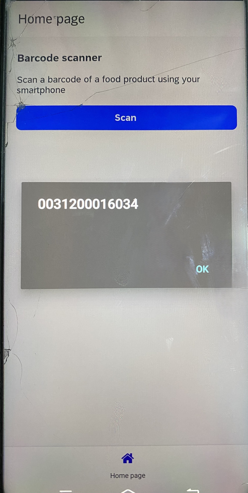
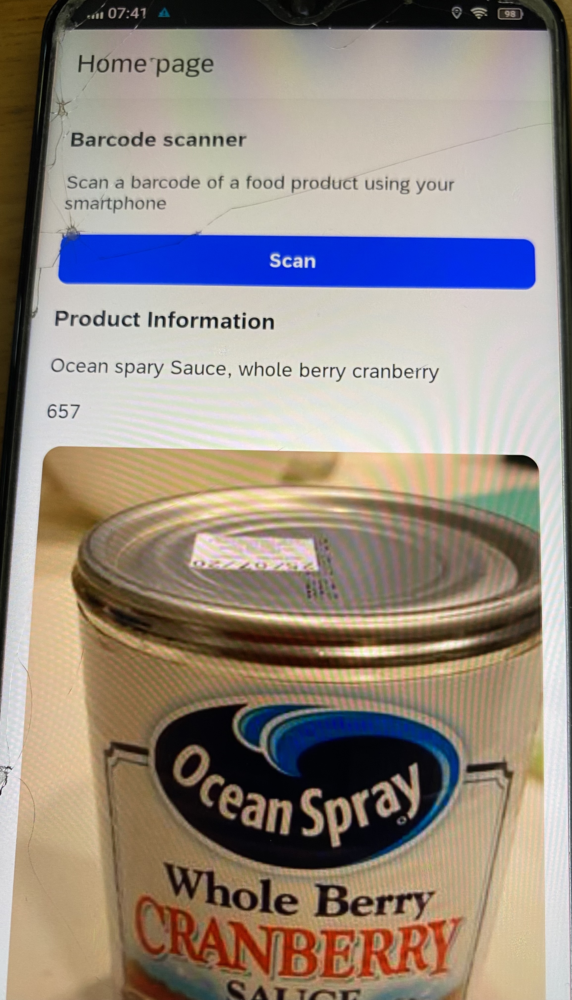

Pattarakan Prapan
Data Processer - Marine Geophysicist
"I am a marine geophysicist currently working towards a master's degree in Data Science. I am actively seeking opportunities in Data Science, Data Analysis, or Data Engineering,
while continually enhancing my skills in these fields."
See my work
Position: Data Processor - Marine Geophysicst
Company: Ocean Geophysics (Thailand) CO., LTD.
Duration: Jan 2023 - Present (1 year 7 months)
Work Description: Conduct thorough data checks and make any needed adjustments to ensure the data is accurate and reliable.
Carefully process qualitative data to interpret seabed objects and sediment features, providing detailed analysis.
Position: Energy Technical Officer
Company: Provincial energy office of Phayao
Duration: Oct 2021 - Sep 2022 (1 year)
Work Description: Work together with other departments, local government organizations,
and community groups on renewable energy projects. Evaluate project stakeholders and choose the best candidates
for project leadership based on a careful review of their qualifications and expertise.
Position: Community Water Resource Management Coordinator
Company: Hydro - Informatics Institute: Community Water Resource Management Division
Duration: Nov 2020 - Aug 2021 (10 months)
Work Description: Collaborate with community water resources to enhance water management efforts by mapping water flow and estimating distances.
Incorporate layers for land use, topography, and existing water infrastructure to represent the factors that contribute to understanding water flow dynamics.
Chiang Mai University
Master's degree | Master of Science (Data Science)
Duration: Jun 2022 - Present (2 years 1 month)
GPA: 3.65
Mahidol University
Master's degree | Bachelor of Science (Geoscience)
Duration: Jun 2022 - Present (2 years 1 month)
GPA: 3.29
Data Engineering with Databricks Workshop 2024
From: ADASTRA and Chiang Mai University
Responsive Image

ASEAN Data Science Explorers 2024 Enablement Session - SAP Analytics Cloud and SAP Build Apps training session
From: SAP, ASEAN FoundationSAP

Skills
- Microsoft Word: Basic skills in creating detailed reports, designing tables, and incorporating visuals.
- Microsoft PowerPoint: Familiar with creating data presentations, importing sound, and adding engaging links.
- Microsoft Excel: Basic experience with data analysis using pivot tables, VLOOKUP, and creating visualization charts.
- QGIS: Basic skills in map creation, object-based image classification, and using Python for simple shapefile editing.
- Python: Fundamental knowledge of data cleaning, creating charts/reports, and basic machine learning.
- SQL: Basic ability to execute queries for targeted data retrieval.
- Google SketchUp: Basic skills in creating and designing simple 3D models.
ASEAN Data Science Explorers 2024 Enablement Session - SAP Analytics Cloud and SAP Build Apps training session
From: SAP, ASEAN FoundationSAP
SAP Analytics Cloud




SAP Build Apps training session

